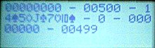
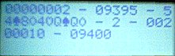

|
 |
 |
 |
|
||||||||||||||||||||||||||||||||||
Bets and PayoffsThe following is the payoff table used by One Chip Video Poker. In the first column we find the value returned by scorehand, 0..9. The second column shows how many coins a hand with that score is worth per coin bet; that is, if you bet n coins on the hand you get n times the number shown as a payoff.
|

One Chip Video Poker Project |
|||||||||||||||||||||||||||||||||
Knowledge Without PowerOne thing that would be nice is for the game to remember what your bankroll was when last you left off playing. As with the RNG seed all we have to do is, whenever the bankroll changes, write it to the data EEPROM. The only times it changes are when a bet is made and when a payoff happens. There is some chance that the user will shut the power off just as the new bankroll amount is being written into the data EEPROM. Unlikely, but possible, and it would trash whatever's being written. This is not really a problem for the random seed, since any value for that is legitimate. For the bankroll, it could be an annoyance; all One Chip Poker does is check for illegal bankroll amounts, see below. The Limits of WealthOne Chip Poker stores the player's account of coins in a 16-bit container (so, really 2 8-bit containers). Therefore, in theory the player could have 65535 coins stored up - it'd take a few Royal Flushes to get there, but it is possible. But there are good reasons for us to limit the bankroll to a lower number:
50,000 is the biggest truly Nice Round Number that fits in 16 bits, IMO; 60,000 or 65,000 look a bit arbitrary and weird. Of course, you're free to tweak it. But 50,000 offers a lot of room for a bankroll to grow; it's unlikely that, if the player hit a 5-coin Royal Flush, that they'd be unable to collect all 4,000 of their coins of winnings. (One of the pictures below from the Unit Test shows such a situation, though. Contemplate the horror of it, the feeling that you've been cheated of all that money.) |
||||||||||||||||||||||||||||||||||
The Bets Unit TestThe unit test for betting is a quickie that builds on the scoring test. It only worries about pat hands, since the scoring test should have shown that the code for drawing and scoring a new hand is working. This is the initial state when the bet unit test is first turned on. The .hex file stores an illegal value for the number of coins in the EEPROM, so the program writes 500 there and starts with that. The display shows, from top to bottom and left to right: seed, current bankroll, number of coins bet; hand, score, number of coins paid off per coin bet; total payoff, and number of coins that will be in the bankroll at the start of the next hand. Partway through the test, it looks like this. So far, the expected values have been showing up just fine.
At this point I shut off the circuit. Aha, looks like the initial value is what I left off with, and recognized as legal by the test program.
If you run through the test a few times, the coins add up pretty fast - here, it's shown that
hitting a Royal Flush on 5 coins bet maxes out the coin capacity when you start with 49905 coins.
So, the clamp-to-50,000 code is working too! |
The scoring test program didn't only look at Royal Flushes, but since they're so rare in gameplay it's kind of fun to see them so I featured them here. The first shown is the coveted PAT ROYAL FLUSH. If you're very good you may one day see one. You can also see one if you're evil and rig the code to spit one out. |
|||||||||||||||||||||||||||||||||
|
 Page Top Page Top
|